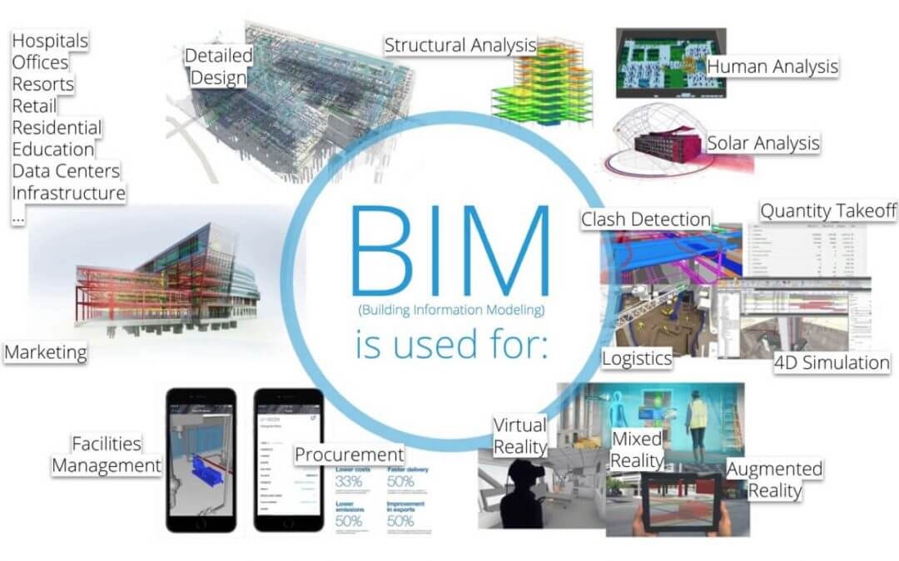

Blog
life is like riding a bicycle to keep your balance you must keep moving

Civil Enginner and Senior
Building Information Modeling Specialist
Collaborating between all disciplines
The Train of the Building Information Modeling is here, and more and more people are aking to see the project before the project gets build
in today's world the coordination of all the discplinis in just one model is crucial for the succes of any kind of project. The success of between Archictes and Engineers not only contructing but making sure the projecte is on schedule and in budget which is what the client is demading in today's world

I joing the movements of the Building Information Modeling (BIM) in 2010 since then I have not looked back
if you are the Constrution industry at some point you will bump into BIM; there is a fascinationg wolrd when it comes to solve problems in the field before they occured in the field. Most people do not realiese the impact of BIM in the more crucial part of any project which translate into monney